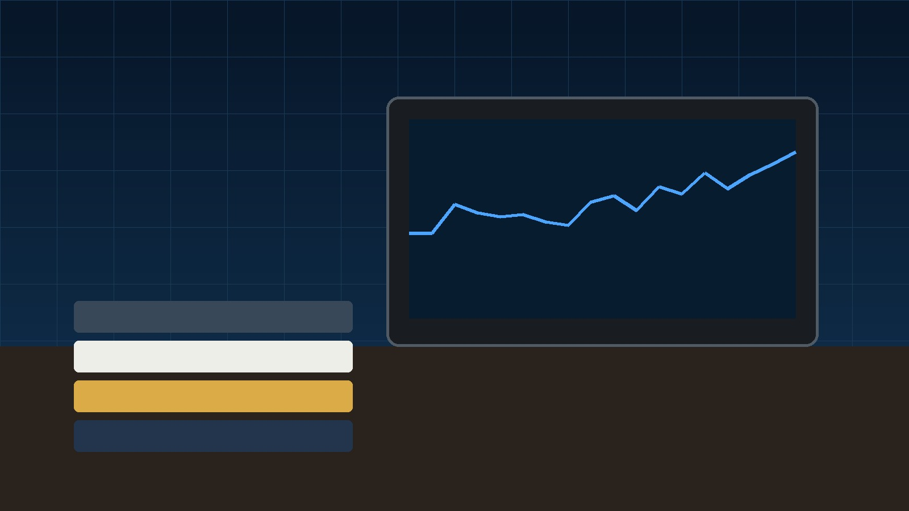
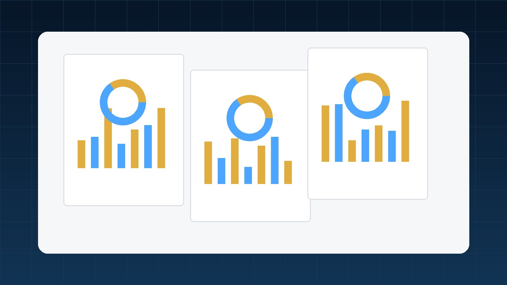
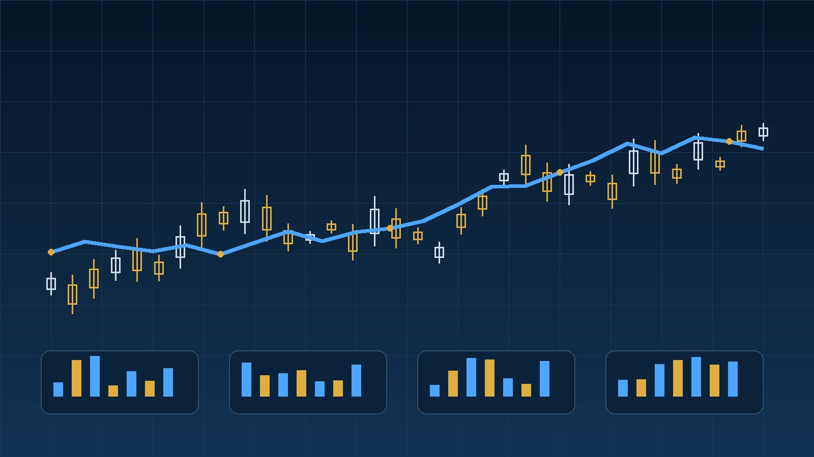

주식 물타기 뜻과 주의점을 검색하는 분들이 가장 궁금해하는 것은 단순한 정의보다 ‘실제로 어떤 순서로 보고, 어떤 숫자를 비교하고, 어디에서 실수하기 쉬운가’입니다. 이 V2 가이드는 주식 물타기 뜻과 주의점의 기본 개념부터 실제 해석, 비교 방법, 위험요인, 관련 지표 연결까지 한 페이지에서 충분히 이해할 수 있도록 내용을 확장했습니다. 특정 종목의 매수·매도를 권하는 글이 아니라 스스로 판단 기준을 만들기 위한 교육용 정보로 활용해 주세요.
- 정의만 외우지 않고 실제 판단 순서까지 연결합니다.
- 한 시점의 숫자보다 추세·원인·동종업계 비교를 함께 봅니다.
- 연관 키워드 페이지를 본문 안에서 연결해 분석 범위를 넓힙니다.
- 실제 예시·주의점·체크리스트로 마지막 판단 기준을 정리합니다.
1. 물타기를 하면 평단가가 왜 낮아질까
물타기를 하면 평단가가 왜 낮아질까 단계에서는 먼저 ‘주식 물타기 뜻과 주의점’이 어떤 판단을 돕는 개념인지부터 분명히 해야 합니다. 매매 기법은 수익을 보장하는 공식이 아니라 의사결정을 일관되게 만들기 위한 도구에 가깝습니다. 용어의 정의만 외우면 실제 시장에서 숫자가 달라졌을 때 해석이 흔들리기 쉽기 때문에, 무엇을 측정하는지와 무엇은 설명하지 못하는지를 함께 구분하는 것이 좋습니다.
처음 확인할 때는 최근 수치 하나만 보지 말고 최소한 이전 기간과 현재 수치를 나란히 놓아 변화의 방향을 살펴보세요. 숫자가 좋아졌다면 매출 증가, 비용 감소, 자본 변화, 금리나 환율 같은 외부 요인 중 무엇이 영향을 줬는지 원인을 찾아야 합니다. 반대로 숫자가 나빠졌더라도 일회성 비용이나 계절성 때문에 단기적으로 왜곡됐을 가능성이 있습니다.
이 페이지에서는 주식 물타기 뜻과 주의점을 단독 지표로 사용하기보다 주식 장기투자 방법 · 주식 실적발표 보는법 · 주식 기업분석 방법 같은 연관 개념과 연결해서 보는 방법을 설명합니다. 이런 방식으로 접근하면 검색으로 얻은 단편적인 정보보다 기업과 시장의 구조를 훨씬 안정적으로 이해할 수 있습니다.
2. 가격 하락 이유를 먼저 살펴보기
가격 하락 이유를 먼저 살펴보기을 볼 때는 비교 기준을 먼저 정해야 합니다. 같은 숫자라도 업종, 기업 규모, 투자기간, 경기 국면에 따라 의미가 달라질 수 있기 때문입니다. 특히 한 기업의 현재 값만 보는 것보다 과거 평균과 동종업계 수준을 함께 비교하면 ‘평소보다 좋아진 것인지’, ‘원래 업종 특성이 그런 것인지’를 구분하기 쉽습니다.
자료를 확인할 때는 출처도 중요합니다. 기업 공시, 사업보고서, 실적자료처럼 원자료를 먼저 보고 증권 정보 화면이나 기사 해석을 보조자료로 활용하는 편이 좋습니다. 발표 시점과 기준 기간이 서로 다른 숫자를 섞어 비교하면 결론이 왜곡될 수 있으므로 연간·분기·최근 12개월 기준을 구분하세요.
초보자라면 모든 숫자를 한꺼번에 볼 필요는 없습니다. 주식 물타기 뜻과 주의점과 직접 연결되는 핵심 항목 두세 개를 먼저 정하고, 변화가 큰 부분만 추가로 파고드는 방식이 효율적입니다. 이 습관을 들이면 자료가 많아도 무엇부터 확인할지 기준이 생깁니다.

3. 계획된 분할매수와 감정적 물타기의 차이
계획된 분할매수와 감정적 물타기의 차이에서는 숫자의 ‘방향’과 ‘속도’를 함께 봐야 합니다. 단순히 증가했다는 사실보다 얼마나 빠르게 변했는지, 그 변화가 한 번으로 끝났는지 여러 기간 이어지는지가 중요합니다. 안정적인 추세와 일회성 급등·급락은 투자 판단에서 완전히 다른 의미를 가질 수 있습니다.
또한 좋은 변화가 이미 주가에 충분히 반영됐는지도 생각해야 합니다. 기업의 실적이나 지표가 개선돼도 시장이 그 사실을 오래전부터 예상했다면 발표 당일 주가 반응은 크지 않을 수 있습니다. 반대로 숫자가 절대적으로 나쁘더라도 예상보다 덜 나쁘면 시장이 긍정적으로 반응할 수 있습니다.
간단한 예시를 만들어 직접 계산해보는 것도 좋습니다. 가상의 기업 A와 B를 두고 주식 물타기 뜻과 주의점 관련 수치가 각각 어떻게 다른지 적은 뒤, 사업 성장성·부채·현금흐름까지 함께 비교해보면 한 지표만 볼 때보다 판단 과정이 훨씬 명확해집니다.
4. 남은 현금과 전체 비중을 살펴보기
남은 현금과 전체 비중을 살펴보기부터는 주식 물타기 뜻과 주의점을 실제 기업이나 시장 상황에 적용하는 과정입니다. 매수 전에는 진입 근거·추가매수 조건·손절 기준·최대 투자금액을 미리 정해 감정적인 대응을 줄이는 것이 중요합니다. 이때 중요한 것은 ‘좋다/나쁘다’처럼 이분법적으로 판단하지 않는 것입니다. 숫자가 좋아 보여도 그 원인이 지속가능하지 않다면 다음 분기에 다시 악화될 수 있고, 반대로 단기 비용 증가가 향후 성장을 위한 투자일 수도 있습니다.
실제 적용에서는 먼저 현재 상태를 기록하고, 다음 확인 시점을 정해두는 것이 좋습니다. 예를 들어 분기 실적 발표 전후로 같은 항목을 다시 비교하거나, 금리·환율처럼 외부 변수가 크게 움직인 시기에 기업의 민감도를 재확인하는 식입니다. 기록이 있으면 나중에 자신의 판단이 맞았는지 복기하기 쉬워집니다.
판단 근거를 세 문장으로 정리해보는 것도 유용합니다. 첫째 현재 주식 물타기 뜻과 주의점 상태가 어떤지, 둘째 그 상태가 만들어진 이유가 무엇인지, 셋째 앞으로 어떤 조건이 바뀌면 기존 판단을 수정할 것인지 적어두세요. 이 세 가지가 명확하지 않다면 매수나 매도보다 추가 확인이 먼저일 수 있습니다.
5. 손실 회복 욕구를 투자 근거로 쓰지 않기
손실 회복 욕구를 투자 근거로 쓰지 않기에서는 숫자 하나를 다른 지표와 교차검증하는 과정이 필요합니다. 주식 장기투자 방법 · 주식 실적발표 보는법 · 주식 기업분석 방법처럼 서로 다른 관점의 지표를 같이 보면 한쪽 숫자가 왜 좋아졌는지 또는 왜 나빠졌는지 확인할 수 있습니다. 서로 다른 지표가 같은 방향을 가리킬 때 분석의 신뢰도가 높아지는 경우가 많습니다.
예를 들어 수익성 지표가 개선됐는데 영업현금흐름이 계속 약하다면 매출채권이나 재고 증가를 확인할 필요가 있습니다. 반대로 현금흐름은 좋아졌지만 매출 성장이 멈췄다면 비용 절감에 의존한 개선인지 살펴봐야 합니다. 이런 교차검증은 단순 순위표나 스크리너만 볼 때 놓치기 쉬운 부분입니다.
같은 업종의 3~5개 기업을 표로 정리해보는 방법도 좋습니다. 주식 물타기 뜻과 주의점 관련 수치, 성장률, 부채, 현금흐름, 현재 주가 수준을 한 화면에 놓으면 특정 기업만 따로 볼 때보다 상대적인 강점과 약점을 훨씬 쉽게 파악할 수 있습니다.

6. 추가매수 횟수와 최대 금액을 제한하기
추가매수 횟수와 최대 금액을 제한하기에서 가장 조심할 부분은 원인과 결과를 거꾸로 해석하는 것입니다. 주가가 올랐다고 해서 모든 지표가 좋아진 것은 아니고, 특정 지표가 좋아졌다고 해서 앞으로도 주가가 오른다는 뜻도 아닙니다. 시장가격은 미래 기대와 위험, 수급까지 함께 반영하기 때문입니다.
또한 데이터를 볼 때 일회성 항목을 구분하세요. 자산 매각, 세금 환급, 일회성 손상차손, 대규모 충당금처럼 반복되지 않는 요인이 포함되면 표면적인 숫자가 크게 흔들릴 수 있습니다. ‘이번 숫자가 다음 기간에도 반복될 수 있는가?’라는 질문을 항상 덧붙이는 것이 좋습니다.
주식 물타기 뜻과 주의점 관련 판단을 내릴 때 자신의 투자기간도 중요합니다. 단기 거래자는 발표 직후의 시장 기대와 수급을 더 민감하게 볼 수 있지만 장기 투자자는 사업 경쟁력과 여러 해의 추세, 현금창출력에 더 큰 비중을 둘 수 있습니다. 같은 자료라도 목적에 따라 해석 우선순위가 달라집니다.
7. 물타기 전 체크리스트 만들기
물타기 전 체크리스트 만들기에서는 실패 가능성을 먼저 적어보는 것이 좋습니다. 투자 아이디어가 맞다는 근거만 모으면 확증편향이 생기기 쉽습니다. 반대로 어떤 상황이 오면 주식 물타기 뜻과 주의점에 대한 기존 해석이 틀렸다고 인정할지 기준을 정하면 과도한 낙관을 줄일 수 있습니다.
위험요인은 기업 내부와 외부로 나눠볼 수 있습니다. 내부에서는 매출 둔화, 마진 악화, 부채 증가, 현금흐름 약화 등을 보고 외부에서는 금리, 환율, 원자재 가격, 규제, 경기 사이클을 확인할 수 있습니다. 이 중 어떤 변수가 해당 페이지의 주제와 가장 직접적으로 연결되는지 우선순위를 정하세요.
위험관리의 핵심은 예측보다 대응입니다. 모든 변화를 미리 맞히려 하기보다 투자금 규모를 조절하고, 확인할 데이터와 판단 수정 조건을 미리 정하는 방식이 현실적입니다. 이렇게 해야 분석이 틀렸을 때 손실이 계좌 전체로 확대되는 것을 막는 데 도움이 됩니다.
8. 실전 상황에서 판단하는 방법
실전 상황에서 판단하는 방법을 할 때는 페이지 하나에서 끝내지 말고 관련 개념을 연결해서 보는 것이 좋습니다. 주식 장기투자 방법 · 주식 실적발표 보는법 · 주식 기업분석 방법는 주식 물타기 뜻과 주의점과 함께 보면 해석 범위를 넓혀주는 대표적인 연결 주제입니다. 한 페이지에서 이해한 내용을 다음 페이지의 개념과 연결하면 사이트 전체가 하나의 학습 흐름으로 이어집니다.
실전에서는 ‘원인 → 숫자 변화 → 기업 실적 → 시장 평가’ 순서로 생각해보세요. 예를 들어 금리나 환율이 움직였을 때 먼저 비용과 매출에 어떤 영향을 줄지 보고, 그 변화가 이익과 현금흐름으로 이어지는지 확인한 다음 현재 주가에 어느 정도 반영됐는지 살펴보는 방식입니다.
이 과정에서 정답 하나를 찾기보다 가능한 시나리오를 두세 개 만들어두는 편이 좋습니다. 기본 시나리오, 긍정 시나리오, 부정 시나리오를 나누고 각 경우에 어떤 데이터가 확인돼야 하는지 적으면 시장 변동에도 판단이 덜 흔들립니다.

9. 숫자로 보는 간단한 예시
숫자로 보는 간단한 예시 단계에서는 지금까지 본 내용을 실제 체크 항목으로 압축합니다. 첫째 주식 물타기 뜻과 주의점의 현재 수준과 추세, 둘째 숫자가 만들어진 원인, 셋째 동종업계와의 차이, 넷째 현금흐름과 재무안정성, 다섯째 현재 가격에 반영된 기대를 순서대로 확인하세요.
마지막에는 매수 이유보다 ‘관찰해야 할 이유’를 먼저 정리하는 것도 좋습니다. 아직 확인되지 않은 데이터가 있다면 다음 실적 발표나 경제지표 발표까지 기다리는 선택도 투자 판단의 일부입니다. 충분히 이해하지 못한 상태에서 서둘러 결정하지 않는 것이 장기적으로 더 중요할 수 있습니다.
체크리스트를 작성한 뒤에는 관련 페이지를 다시 연결해서 빠진 부분이 없는지 확인하세요. 주식 장기투자 방법 · 주식 실적발표 보는법 · 주식 기업분석 방법를 함께 보면 기업·시장·가격이라는 세 축을 균형 있게 점검하는 데 도움이 됩니다. 분석을 반복할수록 자신에게 필요한 핵심 항목이 정리되고 불필요한 정보에 흔들리는 빈도도 줄어듭니다.
주식 물타기 뜻과 주의점 실전 예시
가상의 두 기업을 비교해보세요. A기업과 B기업의 주식 물타기 뜻과 주의점 관련 수치를 나란히 적고, 최근 3년의 매출·이익·현금흐름과 현재 가격 수준을 함께 비교하면 단일 숫자만 볼 때보다 훨씬 구체적인 판단이 가능합니다.
이 예시는 개념 이해를 위한 단순화된 계산입니다. 실제 투자에서는 수수료·세금·기업별 회계처리와 시장 상황을 추가로 확인해야 합니다.
주식 물타기 뜻과 주의점 최종 체크리스트
- 현재 수치만 보지 않고 과거 추세를 함께 확인했는가?
- 숫자가 바뀐 이유를 공시와 실적자료에서 확인했는가?
- 같은 업종 또는 유사 상품과 비교했는가?
- 매출·이익·현금흐름·부채 중 연관 지표를 함께 확인했는가?
- 현재 가격에 긍정적인 기대가 이미 반영돼 있을 가능성을 생각했는가?
- 반대 시나리오와 판단을 수정할 조건을 정했는가?
- 투자금 규모가 자신의 손실 허용범위를 넘지 않는가?
주식 물타기 뜻과 주의점 자주 묻는 질문 8가지
주식 물타기 뜻과 주의점을 처음 볼 때 가장 먼저 확인할 것은 무엇인가요?
정의보다 먼저 이 지표가 무엇을 측정하는지, 어떤 자료를 기준으로 계산되거나 발표되는지 확인하는 것이 좋습니다.
주식 물타기 뜻과 주의점은 최근 수치만 보면 되나요?
한 시점의 값은 계절성이나 일회성 요인의 영향을 받을 수 있으므로 이전 분기·전년·장기 추세를 함께 보는 편이 좋습니다.
주식 물타기 뜻과 주의점이 좋아지면 주가도 반드시 오르나요?
아닙니다. 주가는 미래 기대와 밸류에이션, 수급까지 반영하므로 지표 개선이 곧바로 주가 상승을 보장하지 않습니다.
주식 물타기 뜻과 주의점을 같은 업종과 비교해야 하는 이유는 무엇인가요?
업종마다 정상적인 성장률·마진·부채 수준이 다르기 때문에 동종기업 비교를 통해 상대적인 위치를 이해할 수 있습니다.
주식 물타기 뜻과 주의점에서 일회성 요인은 어떻게 구분하나요?
사업보고서와 실적자료의 주석을 확인하고 자산 매각, 충당금, 세금 효과처럼 반복 가능성이 낮은 항목인지 살펴보세요.
주식 물타기 뜻과 주의점과 함께 보면 좋은 지표는 무엇인가요?
매출과 이익, 재무상태, 현금흐름, 가치평가 지표 중 해당 주제와 직접 연결되는 항목을 함께 보면 해석이 더 입체적입니다.
주식 물타기 뜻과 주의점을 투자 판단에 사용할 때 가장 흔한 실수는 무엇인가요?
숫자 하나만 보고 좋다거나 나쁘다고 단정하는 것입니다. 변화의 원인과 지속가능성, 현재 가격 반영 여부를 함께 확인해야 합니다.
주식 물타기 뜻과 주의점을 공부한 뒤 다음에는 무엇을 보면 좋나요?
관련 내부 페이지에서 재무제표·현금흐름·밸류에이션·시장지표를 이어서 보면 하나의 분석 흐름을 만들 수 있습니다.